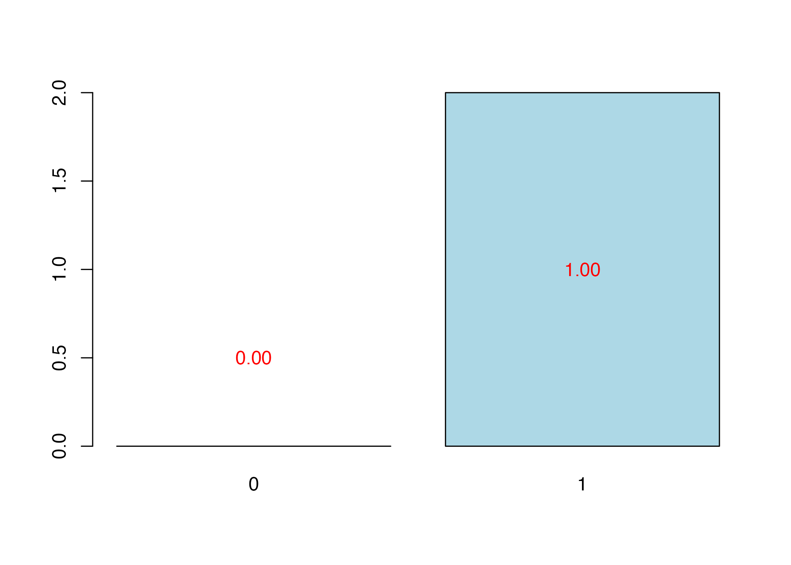
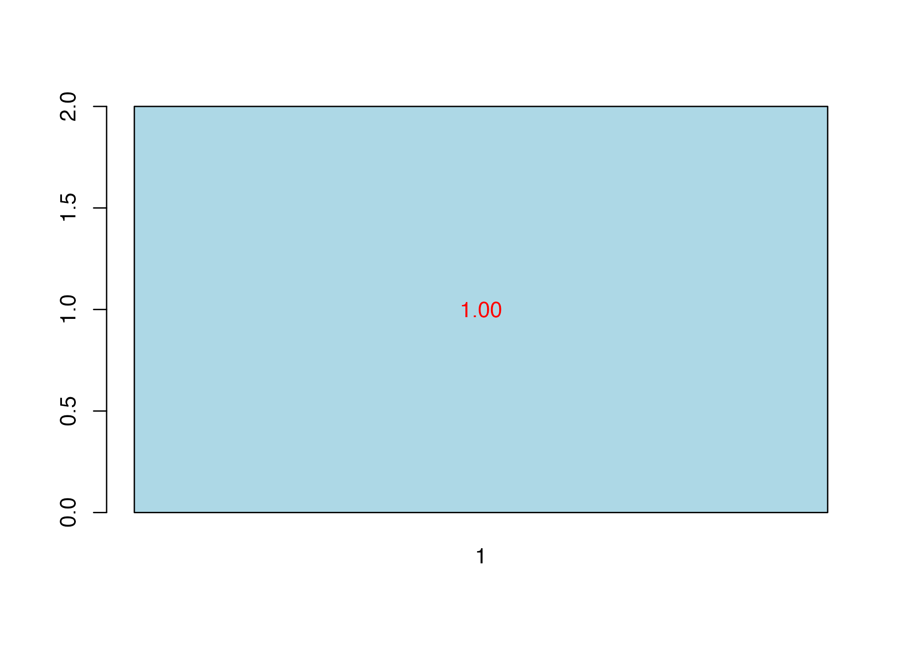

Getting Started with plsRglm
Frederic Bertrand
Myriam Maumy-Bertrand
March 2026
Source:vignettes/getting-started.Rmd
getting-started.RmdplsRglm provides partial least squares regression for
linear and generalized linear models, repeated k-fold cross-validation,
bootstrap utilities, and support for incomplete predictor matrices. This
vignette is the practical starting point for the current package API.
The companion vignette
vignette("plsRglm", package = "plsRglm") keeps the longer
historical case studies and algorithmic notes.
Core Fitting Workflows
plsR() is the dedicated interface for ordinary PLS
regression. plsRglm() extends the same ideas to generalized
linear and ordinal models, and can also fit modele = "pls"
through the shared interface.
Linear PLS with matrix and formula interfaces
data(Cornell)
XCornell <- Cornell[, 1:7]
yCornell <- Cornell$Y
pls_fit_matrix <- plsR(yCornell, XCornell, nt = 3, verbose = FALSE)
pls_fit_formula <- plsR(Y ~ ., data = Cornell, nt = 3, pvals.expli = TRUE, verbose = FALSE)
pls_fit_formula$InfCrit
#> AIC RSS_Y R2_Y R2_residY RSS_residY AIC.std
#> Nb_Comp_0 82.01205 467.796667 NA NA 11.0000000 37.010388
#> Nb_Comp_1 53.15173 35.742486 0.9235940 0.9235940 0.8404663 8.150064
#> Nb_Comp_2 41.08283 11.066606 0.9763431 0.9763431 0.2602256 -3.918831
#> Nb_Comp_3 32.06411 4.418081 0.9905556 0.9905556 0.1038889 -12.937550
#> DoF.dof sigmahat.dof AIC.dof BIC.dof GMDL.dof DoF.naive
#> Nb_Comp_0 1.000000 6.5212706 46.0708838 47.7893514 27.59461 1
#> Nb_Comp_1 2.740749 1.8665281 4.5699686 4.9558156 21.34020 2
#> Nb_Comp_2 5.085967 1.1825195 2.1075461 2.3949331 27.40202 3
#> Nb_Comp_3 5.121086 0.7488308 0.8467795 0.9628191 24.40842 4
#> sigmahat.naive AIC.naive BIC.naive GMDL.naive
#> Nb_Comp_0 6.5212706 46.0708838 47.7893514 27.59461
#> Nb_Comp_1 1.8905683 4.1699567 4.4588195 18.37545
#> Nb_Comp_2 1.1088836 1.5370286 1.6860917 17.71117
#> Nb_Comp_3 0.7431421 0.7363469 0.8256118 19.01033
coef(pls_fit_formula)
#> Coefficients of the components
#> Coeff_Comp_Reg1 Coeff_Comp_Reg2 Coeff_Comp_Reg3
#> 0.4820365 0.2731127 0.1030689
#> Coefficients of the predictors (original scale)
#> [,1]
#> Intercept 92.675989
#> X1 -9.828318
#> X2 -6.960181
#> X3 -16.666239
#> X4 -8.421802
#> X5 -4.388934
#> X6 10.161304
#> X7 -34.528959The fitted model stores the extracted components (tt),
the loadings (pp), the coefficients on the original
predictors (Coeffs), and information-criterion summaries
(InfCrit).
Generalized PLS models
data(aze_compl)
logit_fit <- plsRglm(y ~ ., data = aze_compl, nt = 3, modele = "pls-glm-logistic", verbose = FALSE)
logit_fit$InfCrit
#> AIC BIC Missclassed Chi2_Pearson_Y RSS_Y R2_Y
#> Nb_Comp_0 145.8283 148.4727 49 104.00000 25.91346 NA
#> Nb_Comp_1 118.1398 123.4285 28 100.53823 19.32272 0.2543365
#> Nb_Comp_2 109.9553 117.8885 26 99.17955 17.33735 0.3309519
#> Nb_Comp_3 105.1591 115.7366 22 123.37836 15.58198 0.3986915
#> R2_residY RSS_residY
#> Nb_Comp_0 NA 25.91346
#> Nb_Comp_1 -6.004879 181.52066
#> Nb_Comp_2 -9.617595 275.13865
#> Nb_Comp_3 -12.332217 345.48389
head(predict(logit_fit, type = "response"))
#> 1 2 3 4 5 6
#> 0.631858261 0.166440274 0.006791838 0.414180215 0.022736369 0.030654567
family_fit <- plsRglm(
Y ~ .,
data = Cornell,
nt = 2,
modele = "pls-glm-family",
family = gaussian(link = "log"),
verbose = FALSE
)
family_fit$family$family
#> [1] "gaussian"
family_fit$family$link
#> [1] "log"plsRglm() supports predefined model shortcuts together
with a custom-family entry point:
plsRglm(Y ~ ., data = Cornell, nt = 3, modele = "pls")
plsRglm(Y ~ ., data = Cornell, nt = 3, modele = "pls-glm-gaussian")
plsRglm(Y ~ ., data = Cornell, nt = 3, modele = "pls-glm-inverse.gaussian")
plsRglm(y ~ ., data = aze_compl, nt = 3, modele = "pls-glm-logistic")
plsRglm(round(x11) ~ ., data = pine, nt = 3, modele = "pls-glm-poisson")
plsRglm(x11 ~ ., data = pine, nt = 3, modele = "pls-glm-Gamma")
plsRglm(Quality ~ ., data = bordeaux, nt = 2, modele = "pls-glm-polr")
plsRglm(
Y ~ .,
data = Cornell,
nt = 3,
modele = "pls-glm-family",
family = gaussian(link = "log")
)Ordinal responses are handled through
modele = "pls-glm-polr":
Cross-Validation and Model Choice
Use cv.plsR() for ordinary PLS regression and
cv.plsRglm() for generalized models. Both provide repeated
k-fold cross-validation and integrate with summary() and
cvtable().
cv_pls <- cv.plsR(Y ~ ., data = Cornell, nt = 3, K = 4, NK = 2, verbose = FALSE)
cv_pls_summary <- cvtable(summary(cv_pls))
#> ____************************************************____
#> ____Component____ 1 ____
#> ____Component____ 2 ____
#> ____Component____ 3 ____
#> ____Predicting X without NA neither in X nor in Y____
#> ****________________________________________________****
#>
#>
#> NK: 1, 2
#>
#> CV Q2 criterion:
#> 0 1
#> 0 2
#>
#> CV Press criterion:
#> 1 2 3
#> 1 0 1
cv_pls_summary
#> $CVQ2
#>
#> 0 1
#> 0 2
#>
#> $CVPress
#>
#> 1 2 3
#> 1 0 1
#>
#> attr(,"class")
#> [1] "table.summary.cv.plsRmodel"
plot(cv_pls_summary)
cv_logit <- cv.plsRglm(
y ~ .,
data = aze_compl,
nt = 3,
K = 4,
NK = 2,
modele = "pls-glm-logistic",
verbose = FALSE
)
cv_logit_summary <- cvtable(summary(cv_logit, MClassed = TRUE))
#> ____************************************************____
#>
#> Family: binomial
#> Link function: logit
#>
#> ____Component____ 1 ____
#> ____Component____ 2 ____
#> ____Component____ 3 ____
#> ____Predicting X without NA neither in X or Y____
#> ****________________________________________________****
#>
#>
#> NK: 1, 2
#>
#> CV MissClassed criterion:
#> 1
#> 2
#>
#> CV Q2Chi2 criterion:
#> 0
#> 2
#>
#> CV PreChi2 criterion:
#> 1
#> 2
cv_logit_summary
#> $CVMC
#>
#> 1
#> 2
#>
#> $CVQ2Chi2
#>
#> 0
#> 2
#>
#> $CVPreChi2
#>
#> 1
#> 2
#>
#> attr(,"class")
#> [1] "table.summary.cv.plsRglmmodel"
plot(cv_logit_summary)
For generalized models, summary(..., MClassed = TRUE)
exposes miss-classification information when it is relevant.
Prediction and Missing Data
Incomplete predictor matrices are a core package feature, both during fitting and during prediction.
data(pine)
data(pine_sup)
data(pineNAX21)
pred_fit <- plsRglm(
x11 ~ .,
data = pine,
nt = 3,
modele = "pls-glm-family",
family = gaussian(),
verbose = FALSE
)
pine_sup_small <- pine_sup[1:3, 1:10]
pine_sup_small[1, 1] <- NA
predict(pred_fit, newdata = pine_sup_small, type = "response", methodNA = "missingdata")
#> Prediction as if missing values in every row.
#> 1 2 3
#> 1.069831 1.044208 1.099871
predict(pred_fit, newdata = pine_sup_small, type = "scores", methodNA = "missingdata")
#> Prediction as if missing values in every row.
#> Comp_1 Comp_2 Comp_3
#> [1,] -1.6372897 1.6379888 -0.70670174
#> [2,] 2.7246680 -0.9524725 0.08931408
#> [3,] 0.2109157 0.1437880 0.60713672
missing_train_fit <- plsR(x11 ~ ., data = pineNAX21, nt = 3, verbose = FALSE)
missing_train_fit$na.miss.X
#> [1] TRUEWhen newdata contains incomplete rows,
methodNA = "missingdata" treats all prediction rows with
the missing-data scoring rule, while
methodNA = "adaptative" switches between complete-row and
incomplete-row formulas automatically.
Bootstrap Utilities
bootpls() and bootplsglm() wrap the
boot package for PLS and PLS-GLM models. The default
resampling schemes differ:
-
bootpls()defaults to(y, X)resampling withtypeboot = "plsmodel". -
bootplsglm()defaults to(y, T)resampling withtypeboot = "fmodel_np".
For a lightweight vignette render, the examples below use a small number of resamples and request non-BCa confidence intervals.
boot_pls <- bootpls(pls_fit_formula, R = 20, verbose = FALSE)
dim(boot_pls$t)
#> [1] 20 8
confints.bootpls(boot_pls, indices = 2:4, typeBCa = FALSE)
#>
#> X1 -0.2475717 -0.03327075 -0.2245013 -0.02750589 -0.2506774 -0.05368204
#> X2 -0.3536188 -0.13085016 -0.3745613 -0.16541114 -0.2519763 -0.04282623
#> X3 -0.2439306 -0.03274124 -0.2214286 -0.02580527 -0.2493054 -0.05368204
#> attr(,"typeBCa")
#> [1] FALSE
boot_logit <- bootplsglm(logit_fit, R = 20, verbose = FALSE)
dim(boot_logit$t)
#> [1] 20 33
confints.bootpls(boot_logit, indices = 1:4, typeBCa = FALSE)
#>
#> D2S138 -0.06589283 -0.008551969 -0.06363197 -0.01614121 -0.06403926 -0.0165485
#> D18S61 0.05549884 0.211389097 0.05344981 0.21637898 0.06378505 0.2267142
#> D16S422 -0.05412552 -0.010392387 -0.05157091 -0.01447845 -0.05425966 -0.0171672
#> D17S794 0.02916771 0.100612731 0.02988348 0.10029296 0.03541179 0.1058213
#> attr(,"typeBCa")
#> [1] FALSEThe plotting helpers boxplots.bootpls() and
plots.confints.bootpls() can be applied directly to these
bootstrap objects when a graphical summary is helpful.
Further Reading
- Use
vignette("plsRglm", package = "plsRglm")for the historical applications and algorithmic note. - Use the function help pages for lower-level weighted constructors
such as
PLS_lm_wvc()andPLS_glm_wvc(). - Use
?cv.plsRglm,?bootplsglm, and?predict.plsRglmmodelfor the full argument reference.
sessionInfo()
#> R version 4.5.2 (2025-10-31)
#> Platform: aarch64-apple-darwin20
#> Running under: macOS Sonoma 14.7.1
#>
#> Matrix products: default
#> BLAS: /System/Library/Frameworks/Accelerate.framework/Versions/A/Frameworks/vecLib.framework/Versions/A/libBLAS.dylib
#> LAPACK: /Library/Frameworks/R.framework/Versions/4.5-arm64/Resources/lib/libRlapack.dylib; LAPACK version 3.12.1
#>
#> locale:
#> [1] en_US.UTF-8/en_US.UTF-8/en_US.UTF-8/C/en_US.UTF-8/en_US.UTF-8
#>
#> time zone: Europe/Paris
#> tzcode source: internal
#>
#> attached base packages:
#> [1] stats graphics grDevices utils datasets methods base
#>
#> other attached packages:
#> [1] plsRglm_1.7.0
#>
#> loaded via a namespace (and not attached):
#> [1] sass_0.4.10 lattice_0.22-7 digest_0.6.39
#> [4] magrittr_2.0.4 statnet.common_4.13.0 evaluate_1.0.5
#> [7] grid_4.5.2 RColorBrewer_1.1-3 mvtnorm_1.3-3
#> [10] fastmap_1.2.0 maps_3.4.3 jsonlite_2.0.0
#> [13] Matrix_1.7-4 network_1.20.0 Formula_1.2-5
#> [16] mgcv_1.9-3 bipartite_2.23 spam_2.11-3
#> [19] viridisLite_0.4.3 permute_0.9-10 textshaping_1.0.4
#> [22] jquerylib_0.1.4 abind_1.4-8 cli_3.6.5
#> [25] rlang_1.1.7 splines_4.5.2 cachem_1.1.0
#> [28] yaml_2.3.12 otel_0.2.0 vegan_2.7-2
#> [31] plsdof_0.4-0 tools_4.5.2 parallel_4.5.2
#> [34] coda_0.19-4.1 boot_1.3-32 vctrs_0.7.1
#> [37] R6_2.6.1 lifecycle_1.0.5 car_3.1-5
#> [40] fs_1.6.6 htmlwidgets_1.6.4 MASS_7.3-65
#> [43] ragg_1.5.0 cluster_2.1.8.2 pkgconfig_2.0.3
#> [46] sna_2.8 desc_1.4.3 pkgdown_2.2.0
#> [49] bslib_0.10.0 pillar_1.11.1 glue_1.8.0
#> [52] Rcpp_1.1.1 fields_17.1 systemfonts_1.3.1
#> [55] xfun_0.56 tibble_3.3.1 rstudioapi_0.18.0
#> [58] knitr_1.51 htmltools_0.5.9 nlme_3.1-168
#> [61] igraph_2.2.2 carData_3.0-6 rmarkdown_2.30
#> [64] dotCall64_1.2 compiler_4.5.2